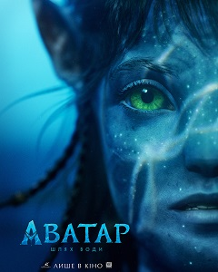

Аватар: Шлях води
«Авата́р: Шлях води́» (англ. Avatar: The Way of Water), також відомий як «Авата́р 2» англ. Avatar 2) — американський епічний науково-фантастичний 3D-фільм режисера та сценариста Джеймса Кемерона, створений студіями Lightstorm Entertainment і TSG Entertainment та розповсюджений студією 20th Century Studios.
Після неодноразових затримок очікуваного графіка прем'єра стрічки «Аватар: Шлях води» відбулася в Лондоні 6 грудня 2022 року, а прем'єра в США відбулася 16 грудня 2022 року.
Фільм зібрав у світовому прокаті понад 2 мільярда доларів, ставши першим за рахунком найкасовішим фільмом 2022 року та отримав загалом позитивні відгуки від критиків. Стрічку хвалили за візуальні ефекти та технічні досягнення, утім головним недоліком вважається її тригодинна тривалість.[8] Фільм перетнув позначку в мільярд доларів за два тижні, що й зробило його шостим з-поміж касових стрічок.[9] Національна рада рецензій та Американський інститут кіно назвали "Аватар: шлях води «одним із десяти найкращих фільмів 2022 року. Фільм також отримав численні нагороди, зокрема номінації на найкращий фільм— драма і найкращий режисер на 80-й церемонії вручення премії „Золотий глобус“ .
Зміст
- Сюжет
- У ролях
- Історія створення
- Початок
- Проблема дати виходу
- Підготовка до зйомок
- Продовження
- Примітки

Початок
Ще в червні 2006-го, за три роки до виходу в прокат першого "Аватара", режисер Джеймс Кемерон повідомив про можливе створення сиквелів фільму, якщо той отримає визнання[10]. У середині лютого 2010 року режисер в інтерв'ю телеканалу MTV заявив, що перш ніж приступати до зйомок сиквелу йому необхідно вирішити деякі питання щодо контракту зі студією. Також Кемерон повідомив про те, що «Аватар 2» буде продовженням історії основних персонажів попередньої частини[11]. У квітні 2010 року режисер розкрив деякі деталі щодо «Аватара 2» і «Аватара 3». Зокрема, він повідомив про акцент на океані Пандори як головному місці дії фільму, а також про намір включити всю зоряну систему Альфа Центаври в сюжет третьої частини[12]. У січні 2011 року Кемерон заявив, що обидва фільми він має намір зняти і завершити одночасно, але випустити з інтервалом в один рік. Крім цього всі актори, чиї персонажі вижили до кінця фільму, отримали запрошення знятися в сиквелі[13].
сюжет
П'ятнадцять років після того, як На'ві відбили вторгнення людей на Пандору адміністрацією розвитку ресурсів (RDA), Джейк Саллі живе як вождь клану Оматікайя і виховує сім'ю з Нейтірі, до якої входять сини Нетеям і Лоак, дочка Тук, усиновлена дочка Кірі (народжена від аватара Грейс Августін) і людський хлопчик на ім'я Майлз "Павук", син полковника Кворича, який народився на Пандорі і не зміг через юний вік летіти на Землю у кріокапсулі. На жах На'ві, RDA повертається, щоб підготувати Пандору до колонізації людьми, коли Земля гине. Серед новоприбулих є "рекомбінанти" — аватари На'ві, імплантовані в розум і спогади загиблих солдатів—людей, а рекомбінант Кворича служить їх лідером.
хочу вниз
Через рік Джейк очолює партизанську кампанію проти RDA. Під час операції проти повстанців Кворич та його підлеглі захоплюють дітей Джейка. Джейк і Нейтірі прибувають і звільняють їх, але Павук залишається в полоні у Кворича, який визнає його сином. Після того, як RDA не вдається змусити Павука розкрити інформацію за допомогою тортур, Кворич вирішує провести з ним час, щоб залучити Павука на свій бік, і, в свою чергу, Павук вчить Кворича культурі та мові На'ві. Усвідомлюючи небезпеку, яку знання Павуком місцеперебування сім'ї Джейка створює для їхньої безпеки, він з рідними добровільно йдуть з Оматикаї і відступають до клану рифових людей Меткаїна на східному узбережжі Пандори. Хоча Джейку та його родині надається притулок, деякі з племені ставляться до них з неприязню через їхню людську спадщину, оскільки Джейк, Лоак і Кірі мають десять пальців на руках і ногах, а не вісім. Тим не менше, сім'я вивчає звичаї рифового народу, Кірі розвиває духовний зв'язок з морем і його мешканцями, а Лоак дружить з Циреєю, дочкою вождя клану Тоноварі і його дружини Ронал.
Лоак вступає в бійку з братом Циреї Аонунгом. Коли він повертається, щоб вибачитися за наполяганням Джейка, Аонунг та його друзі заманюють його в подорож на територію небезпечного морського хижака і залишають на мілині. Лоак врятований і подружився з Пайаканом, тулкуном — розумним і миролюбним видом китоподібних, яких Меткаїна вважають своєю духовною родиною. Повернувшись, Лоак завойовує дружбу Аонунга, беручи на себе провину за поїздку, але йому кажуть, що Пайакан є вигнанцем серед свого виду. Під час подорожі до духовного дерева Меткаїнів, яке знаходиться під водою, Кірі з'єднується з ним і зустрічає свою матір, свідомість якої живе всередині планети через її смерть, коли вона була пов'язана. Однак їх зустріч переривається, коли у Кірі трапляється напад і вона втрачає свідомість. Джейк звертається за допомогою до Норма Спеллмана та Макса Пателя за допомогою їх сучасного медичного обладнання, які діагностують у Кірі епілепсію та попереджають, що вона не може ризикувати знову підключитися до дерева духів. Хоча Кірі врятована втручанням Ронала, Кворич здатний відстежити літак, яким користувалися Спеллман і Патель, до архіпелагу, де живуть рифові люди. Взявши з собою Павука, він захоплює китобійне судно, яке полює на тулкунів, щоб зібрати їх мозкові ферменти для омолоджуючого засобу під назвою Амріта. Кворич та його підлеглі подорожують по всьому архіпелагу, жорстоко допитуючи корінні племена про місцеперебування Джейка; коли це виявляється безрезультатним, він наказує китобійній команді вбивати тулкунів поблизу сіл, щоб виманити Джейка, знаючи, що це призведе племена в лють. Лоак подумки зв'язується з Паяканом і дізнається, що тулкуна вигнали, бо він пішов проти пацифістських звичаїв свого виду і напав на китобоїв, які вбили його матір, що призвело до загибелі багатьох тулкунів і На'ві.
Коли Меткаїна дізнаються про вбивства тулкуна, Лоак відправляється попередити Пайакана, за ним слідують його брати і сестри, Цирея, Аонунг і Ротхо. Вони виявляють, що Пайакан переслідується китобоями, а Лоак, Цирея і Тук захоплені Кворичем. Коли їхні діти опинилися в небезпеці, Джейк, Нейтірі і декілька воїнів Меткаїна вирушили протистояти людям. Кворич змушує Джейка здатися, але, побачивши, що Лоак знаходиться в небезпеці, Пайакан нападає на китобоїв, викликаючи бійку, в якій гине велика частина команди і пошкоджується судно. Нетеям рятує Лоака, Цирею та Павука, але в нього стріляють люди Кворича, і незабаром після цього він помирає від ран. Джейк стикається з Кворичем, який використовує Кірі як заручницю. Коли Нейтірі робить те ж саме з Павуком, Кворич спочатку заперечує свої стосунки з ним, але утримується, коли Нейтірі ріже Спайдера поперек грудей, перед тим як підняти ніж, щоб убити його.
Джейк, Кворич, Нейтірі та Тук потрапляють у пастку всередині потопаючого судна. Джейк задушує Кворіча до непритомності, і його рятують Лоак і Пайакан, тоді як Кірі закликає морських істот допомогти їй врятувати Нейтірі та Тука. Павук рятує Кворича, але відмовляється летіти з ним і возз'єднується з родиною Джейка. Після похорону Нетеяма Джейк повідомляє Тоноварі та Роналу про своє рішення залишити плем'я Меткаїна. Однак Тоноварі приймає його до клану і запрошує його сім'ю залишитися. Джейк та його сім'я приймають пропозицію і налагоджують нове життя в морі, причому Джейк обіцяє відновити свою кампанію проти загарбників-людей, тоді як Кворич обіцяє поквитатися.
«Авата́р» (англ. Avatar) — американський науково-фантастичний фільм 2009 року сценариста і режисера Джеймса Кемерона з Семом Вортінгтоном і Зої Салданою в головних ролях. Дія фільму відбувається в 2154 році, коли людство видобуває цінний мінерал анобта́ніум на Пандорі, населеному супутнику газової планети в зоряній системі Альфа Центавра. За сюжетом ресурсодобувна корпорація загрожує існуванню місцевого племені людиноподібних розумних істот— на'ві. Назва фільму— назва генетично спроектованих тіл гібридів на'ві і людей, які використовуються командою дослідників для вивчення планети та взаємодії з тубільними мешканцями Пандори.
Створення «Аватара» почалося в середині 1990-х років, коли Джеймс Кемерон написав 80-сторінкову концепцію сценарію фільму. Планувалося розпочати зйомки в 1997-му і випустити «Аватар» в прокат вже в 1999 році, але, за словами Кемерона, на той момент ще не існувало технологій, здатних втілити його бачення картини. Робота над мовою на'ві почалася влітку 2005 року, а на початку 2006 року Кемерон приступив до створення сценарію і вигаданого всесвіту. За офіційними даними, бюджет «Аватара» становить близько 237 мільйонів доларів, за іншими оцінками, витрати на виробництво фільму варіюються від 280 до 310 мільйонів, а вартість рекламної кампанії оцінюється в 150 мільйонів доларів. Під час зйомок картини широко використовувалася технологія захоплення руху. Фільм вийшов в прокат в традиційному форматі, 3D-форматі (RealD 3D, Dolby 3D, XpanD 3D і IMAX 3D) та в 4D-форматі в деяких кінотеатрах Південної Кореї.
Прем'єра «Аватара» відбулася в Лондоні 10 грудня 2009 року. У міжнародний прокат, включаючи США і Канаду, фільм вийшов 16-18 грудня того ж року. Картина мала комерційний успіх і здобула схвалення критиків. Вона побила декілька рекордів по зборах, ставши найкасовішим фільмом всіх часів в Північній Америці, Україні і в усьому світі, обійшовши «Титанік», який утримував рекорд протягом 12 років. «Аватар» також став першим фільмом в історії кінематографа, касові збори якого перевищили позначку в 2 мільярди доларів. Фільм номіновано на «Оскар» в дев'яти категоріях, включаючи «найкращий фільм» і «найкраща режисерська робота», і переміг в трьох з них: «найкраща операторська робота», «найкращі візуальні ефекти» і «найкраща робота художника-постановника». DVD-реліз фільму побив рекорди продажів, а Blu-ray-видання стало одним з найуспішніших в історії.
У 2022 році фільм було перевидано у 4К. Повторний прокат фільму в Україні відбувся 22 вересня 2022 року з тим ж самим дубляжем.
хочу сюда
Після успіху фільму Кемерон підписав контракт з 20th Century Fox про створення чотирьох сиквелів: «Аватар: Шлях води» та «Аватар 3» завершили основні зйомки, і їх вихід заплановано на 16 грудня 2022 року та 20 грудня 2024 року відповідно; вихід наступних сиквелів запланований на 18 грудня 2026 року та 22 грудня 2028 року.[4] Очікується, що повернуться кілька акторів, включаючи Вортінґтона, Салдану, Ленґа та Вівер.[5][6]